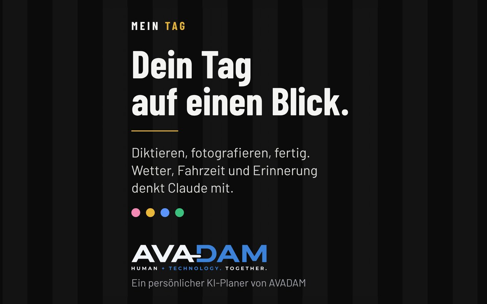

Sites web
Des sites clairs et rapides, aussi agréables sur téléphone que sur ordinateur. Conçus dès le départ pour que Google et les recherches par IA les trouvent et les comprennent.
Nous créons des sites web, des logiciels et outils, des vidéos animées et des cartes interactives. Les idées viennent de nous, l'IA nous aide à les réaliser vite et bien. Nous sommes chez nous en Suisse et en Écosse.
Tout commence par une idée. Ensuite, nous choisissons les outils les plus adaptés, et aujourd'hui c'est souvent l'IA.
Des sites clairs et rapides, aussi agréables sur téléphone que sur ordinateur. Conçus dès le départ pour que Google et les recherches par IA les trouvent et les comprennent.
Des logiciels pour de vrais processus. GuardOpS est né de 22 ans d'expérience dans la sécurité. Nous construisons ce dont nous aurions eu besoin nous-mêmes.
De courtes vidéos animées pour les réseaux sociaux et les sites web. L'histoire et les images viennent de nous, l'IA nous aide à leur donner vie.
Des cartes où hôtes et clients explorent par eux-mêmes, avec temps de trajet, catégories et conseils personnels des hôtes.

Site commun de huit moniteurs et monitrices d'auto-école pour le cours de sensibilisation au trafic et le cours de premiers secours. Dates, lieux et inscription au même endroit.
Découvrir ↗
Site d'un cottage de vacances pour deux à Grantown-on-Spey, au cœur du parc national des Cairngorms. Personnel, chaleureux et avec réservation directe.
Découvrir ↗Site pour les films de mariage d'Adi en Suisse. Calmes, documentaires et sans grande mise en scène, avec le déroulement, les avis des couples et une FAQ. Entièrement conçu et réalisé par Adrian lui-même.
Découvrir ↗Logiciel d'exploitation pour les petites et moyennes entreprises de sécurité suisses. Planification des services, app pour les collaborateurs, rondes avec NFC ou géorepérage, portail client et factures avec QR-facture.
Découvrir ↗
Agenda personnel avec l'IA. Rendez-vous et idées se dictent, se photographient ou s'envoient par e-mail. Avec météo, temps de trajet, rappels push et jour, semaine et mois en un coup d'œil.
Découvrir ↗Deux exemples pour le Garden Park Guest House à Grantown-on-Spey. Idée et scénario de notre part, réalisés avec l'IA.
AVADAM est formé de nos noms, Adrian von Arb et Daniel Muccio. Il se prononce comme Adam.
Et ce n'est pas un hasard. Adam représente le premier être humain. C'est là que tout a commencé, y compris l'ère de l'IA. Sans les humains, il n'y aurait ni robotique, ni IA, ni technologie.
AVADAM n'est donc pas seulement deux noms et une entreprise. Il doit nous rappeler d'où nous venons.
Nous sommes Adi et Dani. Ensemble, nous réunissons une belle expérience, de la formation en ressources humaines au support marketing et vente, jusqu'à la sécurité et la surveillance. S'y ajoutent des fonctions de directeur adjoint et de CEO dans des entreprises de taille moyenne, ainsi que la création réussie de plusieurs entreprises en Suisse et au Royaume-Uni.
Adi est un photographe passionné depuis des années et travaille aussi depuis quelque temps comme réalisateur. En Écosse, Dani développe d'autres activités dans l'hébergement et la location de vacances.
Avec AVADAM, nous réunissons tout cela. Nous connaissons le quotidien d'une entreprise de l'intérieur, et c'est exactement pour ce quotidien que nous créons nos sites web et nos outils.
Ta question n'y est pas ? Écris-nous sans engagement.
Pas via un login, et c'est voulu. Sans CMS, il n'y a pas de mises à jour, pas d'extensions et rien qui casse pendant la nuit. Tu nous envoies tes modifications, nous les faisons et facturons le temps passé. Pas d'abonnement.
Pour un site qui montre ce que tu fais, c'est trop de machinerie. Mises à jour permanentes, failles de sécurité, frais mensuels. Fait main, il se charge plus vite, il est plus sûr et, après un investissement initial unique, ne coûte plus que l'hébergement et le domaine.
En général environ deux mois après ton feu vert. Ce sont les textes et les images qui prennent le plus de temps, pas la construction. Si tu as une date fixe, dis-le-nous dès le départ et nous te dirons franchement si c'est faisable.
Oui, Adrian est photographe et vidéaste passionné. S'il manque de bonnes images, tu peux réserver ce service en option, directement chez toi, par exemple dans ton entreprise. Ainsi images, vidéos et site vont parfaitement ensemble, le tout chez un seul interlocuteur.
Pour nous, l'IA est un outil, comme autrefois Photoshop ou un éditeur de code. Nous n'y mettons que ce qui ira de toute façon sur ton site, c'est-à-dire des textes, des images et des informations que tu veux publier. Les listes de clients, les mots de passe ou les données de tes clients, nous n'en avons pas besoin et nous n'en voulons pas. Les idées, les décisions et le contrôle restent chez nous deux, et nous relisons chaque ligne nous-mêmes.
Plusieurs, cela dépend entièrement du mandat. Pour les textes et le code, nous utilisons d'autres outils que pour les images ou les vidéos. Nous n'utilisons pas de versions gratuites, nous travaillons avec des abonnements payants. Ainsi nous avons de meilleurs outils et plus de contrôle sur ce qui arrive aux données, pour toi comme pour nous.
Non. Le site terminé est du HTML tout à fait normal, sans IA, sans suivi et sans cookies, sauf si tu veux autre chose. Il ne collecte rien sur tes visiteurs. Si tu veux plus tard des statistiques ou un formulaire de contact, nous en parlons d'abord et adaptons la déclaration de confidentialité.
Le site est construit pour que Google puisse bien le lire, avec une structure propre, un chargement rapide et les bonnes informations en arrière-plan. Personne ne peut te garantir la première place, franchement. Pour les recherches locales, ta fiche d'établissement Google compte aussi. Nous t'aidons volontiers, mais c'est à toi de la créer.
Site web, outil, vidéo ou carte, tout commence par une discussion.
✉ Adresse e-mail bientôt disponible